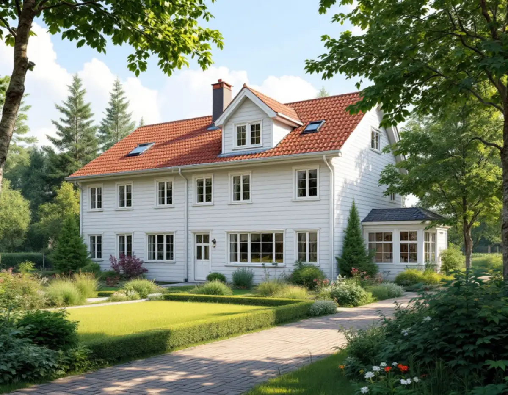
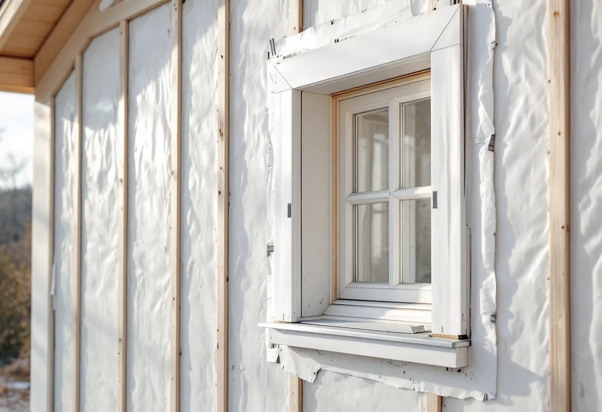

Platsbesök
Vi bedömer beklädnad, underlag och anslutningar och noterar vad som kan sparas och återanvändas.
Sollentunas översiktsplan säger att funktionella bostadshus i regel inte ska rivas för att ge plats åt nya, och att byggnader och material ska återanvändas. För en villa eller ett radhus med sliten fasad är det ett skäl att renovera det som finns. Geal Entreprenad AB byter panel, lagar puts och tilläggsisolerar i hela kommunen, med gratis platsbesök och skriftligt kostnadsförslag.

I översiktsplanen med sikte på 2040 skriver Sollentuna att kommunen, för att leva upp till sin miljö- och klimatpolicy, i regel inte bör medge förtätningar som förutsätter att funktionella bostadshus rivs. Bebyggelsens klimatpåverkan ska begränsas genom att byggnader och material återanvänds, hållbara material väljs och energieffektiva lösningar används. Planen vill också att byggmaterial och byggdetaljer återbrukas i möjligaste mån.
Planen beskriver villastaden som växte fram under 1900-talets första hälft, med en robust kvartersstruktur och en grön lummighet som ska bevaras. Senare tillkom andra områden. I Sjöberg skedde den stora utbyggnaden under 70-, 80- och 90-talen, med en tidstypisk blandning av villor, radhus och flerbostadshus.
För fasaden innebär det att utgångsläget ofta är ett hus som är värt att behålla, men där panel, puts eller isolering har nått slutet av sin livslängd. Friska brädor kan sparas och sättas tillbaka, och originalfönster och detaljer kan renoveras i stället för att bytas.

Boverkets energiguide konstaterar att det ofta är en utmaning att få lönsamhet i en tilläggsisolering av fasaden om man bara räknar på energin, och att den blir lönsammast om man passar på när fasaden ändå ska ändras. Ska panelen bytas kan man undersöka om det finns utrymme att komplettera isoleringen eller byta den befintliga mot en med bättre egenskaper.
Myndigheten tar också upp nyttor som inte syns på elräkningen: varmare inomhus på vintern och svalare på sommaren, och att isoleringen kan dämpa buller utifrån. Efteråt behöver värmesystemet justeras in, och i hus med mekanisk ventilation även luftflödena. Ett minskat effektbehov kan dessutom göra det möjligt att säkra ned huvudsäkringen. Tänk också på att väggen blir tjockare, vilket kan påverka dagsljuset och utblicken, och att en utvändig isolering kan inkräkta på grannfastigheten om huset står nära tomtgränsen.
Boverket råder också att dokumentera energianvändningen före renoveringen och följa upp den under första året. Fotografier av väggens uppbyggnad medan den är öppen blir ett värdefullt underlag nästa gång huset ska renoveras. Vill du jämföra med att isolera vinden, se vindsisolering.
En del yngre hus har puts direkt på isolering på en stomme av träreglar. Boverket beskriver hur träregelväggar började byggas med enstegstätade putssystem eftersom metoden var enkel, och hur fasaden visade sig känslig för skador som släppte in regn och ledde till omfattande fuktskador i väggarna.
På en enstegstätad fasad finns bara en yttre tätningsnivå. Kommer vatten innanför är det inne i väggen och kan bara torka ut långsamt. En tvåstegstätad vägg har i stället en ventilerad luftspalt bakom det yttre skiktet, så att vatten som tar sig förbi kan rinna ut igen. Enligt Boverket fungerar enstegstätning oftast bra på ytor utan genomföringar, men vid fönster, dörrar och andra genomföringar minskar tvåstegstätade detaljer risken.
Vid en renovering av en sådan fasad börjar vi därför med anslutningarna kring fönster och dörrar. Finns det fuktskador i stommen behöver orsaken åtgärdas innan ny puts eller ny beklädnad monteras. Boverket påpekar också att tätning med mjukfog kan ha en relativt kort livslängd även när den är väl utförd, och råder fastighetsägare att besiktiga fasaden regelbundet så att inläckage upptäcks tidigt.
Sollentuna kommun skriver att de bygglovsbefriade åtgärderna inte går att tillämpa för byggnader och områden som är kulturhistoriskt särskilt värdefulla. I kartan med gällande detaljplaner går det att ta fram ett lager som visar vilka områden som omfattas av kulturmiljöplanen. Kommunen påpekar samtidigt att en byggnad kan vara särskilt värdefull även om den inte finns med där, och att du då kan kontakta kommunen.
Utanför de värdefulla miljöerna kräver ett byte av fasadbeklädnad oftast inget bygglov på ett en- eller tvåbostadshus. Vissa detaljplaner har ändå bestämmelser om hur fasadmaterialet ska vara utfört, och för radhus och kedjehus beror möjligheterna på hur bebyggelsen är utformad. Vill du ha ett beslut på att ändringen uppfyller kraven kan du söka frivilligt bygglov.
Vi bedömer beklädnad, underlag och anslutningar och noterar vad som kan sparas och återanvändas.
Vid misstanke om fukt öppnar vi fasaden på utvalda ställen innan arbetet planeras.
Du får ett skriftligt förslag där renovering, byte och isolering är uppdelade.
Vi kontrollerar detaljplanen och kulturmiljöplanens lager innan material beställs.
Isolering, vindskydd, luftspalt och beklädnad monteras, med särskild omsorg kring fönster och dörrar.
Fasaden målas eller avfärgas, och vi påminner om injustering av värme och ventilation.
I ett småhus ger tilläggsisolering, byte och reparation av fasader, fasadmålning och uppsättning och nedmontering av ställning rotavdrag. Avdraget är 30 procent av arbetskostnaden, högst 50 000 kr per person och år; tillsammans med rut gäller högst 75 000 kr. Material och resor räknas inte.
Avdraget gäller per person, så två ägare har var sitt utrymme. Geal drar avdraget direkt på fakturan.
Hur mycket av beklädnaden som kan sparas, om stommen har fuktskador som måste åtgärdas, hur tjock tilläggsisolering som väljs och hur mycket fönster, dörrar och takfot behöver anpassas. På en putsad regelvägg väger anslutningarna tungt. Vi kommer ut på ett gratis platsbesök och lämnar sedan ett skriftligt kostnadsförslag.
Puts, panel och tilläggsisolering.
Fasadrenovering i Stockholm →Takbyte, takbesiktning och plåtarbeten.
Takläggare i Sollentuna →Norrviken, Tureberg och Edsberg.
Takrenovering i Sollentuna →Villor och radhuslängor.
Målare i Sollentuna →Altan, dörrar och snickerier.
Snickare i Sollentuna →Tillbyggnad, tomtdelning och lov.
Byggföretag i Sollentuna →Buller, ljudglas och radhus i Sollentuna.
Fönsterbyte i Sollentuna →Täta gamla fönster med ventilationen i åtanke.
Fönsterrenovering i Sollentuna →Radhus i Sjöberg och villor nära stationerna.
Golvläggare i Sollentuna →Massivt trä eller lamell – vad går att slipa.
Golvslipning i Sollentuna →Villastad och radhuslängor.
Köksrenovering i Sollentuna →Radhusplåt, bleck och rännor i Sollentuna.
Plåtslagare i Sollentuna →Ansökan, solceller och radhus.
Takbyte i Sollentuna →Ny tapet efter prov av väggen.
Tapetsering i Sollentuna →På höjden, nya byggregler och ritningar.
Tillbyggnad i Sollentuna →